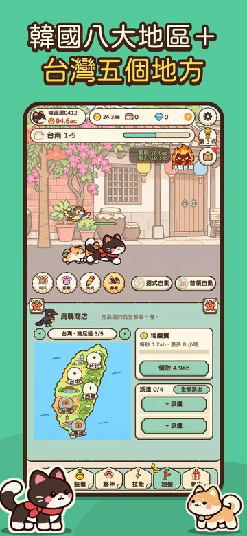
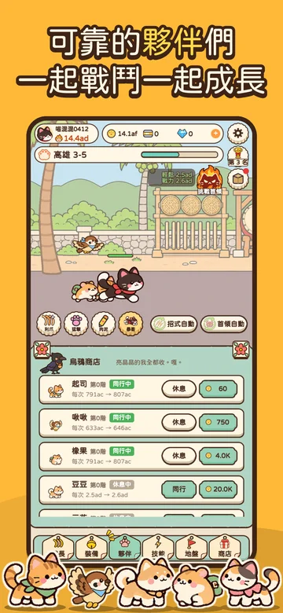
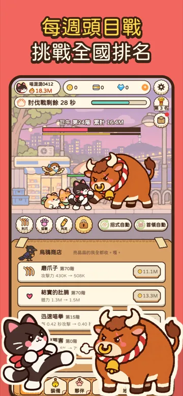

喵混混養成記
從巷口到全世界
可愛的賓士街貓，逐區搶下地盤。 和巷子裡的動物打架賺錢，到烏鴉商店變強，打倒頭目前往下一個地區。直式畫面的放置型遊戲。
 遊戲介紹
遊戲介紹
這條街歸我了喵
 平台
平台- iOS
 類型
類型- 放置型 RPG
 狀態
狀態- 已於 2026 年 11 月 13 日在 App Store 上架。Google Play 版本正在準備中。有任何問題都歡迎來信詢問。
 政策
政策- 隱私權政策
 聯絡
聯絡 遊戲數據一覽
遊戲數據一覽
- 13地區
- 390關卡
- 10夥伴
- 5造型

附近的動物，揍贏再說！
從鴿子、野狗到亞洲黑熊，韓國和台灣真實存在的約 90 種動物，都會以對手和頭目的身分登場。頭目要親手打趴，才能搶下那一區的地盤。

韓國八大地區＋台灣五個地方，共 390 個關卡
每個地區的風景、出沒的動物和等著你的頭目都不一樣。搶下的地盤在關掉遊戲時也會累積地盤費，最多 8 小時。
韓國
- 首爾
- 京畿
- 忠清
- 全羅
- 慶尚
- 釜山
- 江原
- 太白
台灣
- 台北
- 台中
- 西螺
- 台南
- 高雄
等著你的老大們
- 胖喵老大
- 貉頭目
- 牛蛙老大
- 亞洲黑熊

渡海來台灣
一路打到太白、稱霸韓國後，在箱子裡睡著，就這樣被裝上船送到了台灣。從台北到高雄，每到一個地方就找當地最強的一夥嗆聲，把牠們打趴。還能招募在台灣遇到的五位新夥伴，和你並肩作戰。
 可靠的夥伴們
可靠的夥伴們
10
韓國五位、台灣五位，可不全是貓咪喔！最多帶三位一起並肩作戰，沒上場的夥伴派出去，回來時會帶著一包戰利品。
 起司跳起來用前爪撲上去
起司跳起來用前爪撲上去 啾啾從空中以鳥喙直衝而下
啾啾從空中以鳥喙直衝而下 橡果打架賺到的錢變多
橡果打架賺到的錢變多 豆豆慢但很重的頭槌
豆豆慢但很重的頭槌 三花人類給的錢變多
三花人類給的錢變多 藍藍用爪子抓下來
藍藍用爪子抓下來 鷺鷺縮起脖子再啄一下
鷺鷺縮起脖子再啄一下 牛牛雖然慢，但牛角衝撞超有份量
牛牛雖然慢，但牛角衝撞超有份量 石虎遠遠跳起撲上去
石虎遠遠跳起撲上去 猴猴咻地丟出香蕉
猴猴咻地丟出香蕉

每週突襲
在限定時間內用力痛打不會倒下的巨大頭目「巨牛」，用打出的傷害爭奪當週排名。
造型: 燕尾貓 · 起司 · 孟買貓 · 挪威森林貓 · 波斯貓
 遊戲畫面
遊戲畫面
4 01
01打架賺錢，打倒頭目
和巷子裡的動物打架賺錢。變強之後就挑戰頭目，前往下一關。
 02
02到烏鴉商店變強
烏鴉什麼亮晶晶的東西都收。在烏鴉商店強化爪子、體力和裝備，讓自己變得更強。
 03
03召集夥伴，收地盤費
搶下的地區會持續累積地盤費。派出夥伴，就算離線也能收取更多地盤費。
 04
04從都市巷弄到深山
從市區巷弄出發，穿過鄉間田野，一路深入深山。每個地區都有各自的頭目等著你。
畫面可能隨更新而有所不同。畫面為韓文版。
影片
2- 技能集錦
- 巷子裡的人們
字幕為韓語。